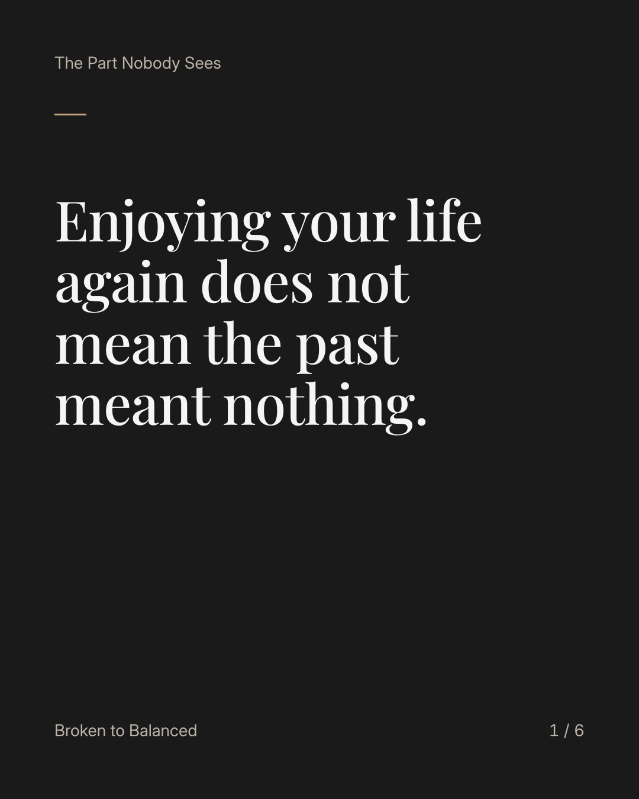
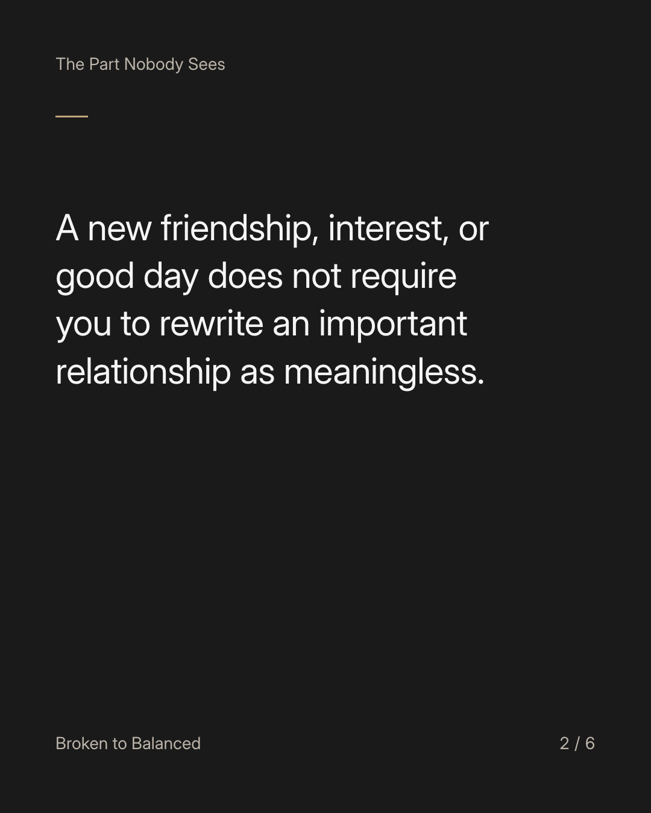
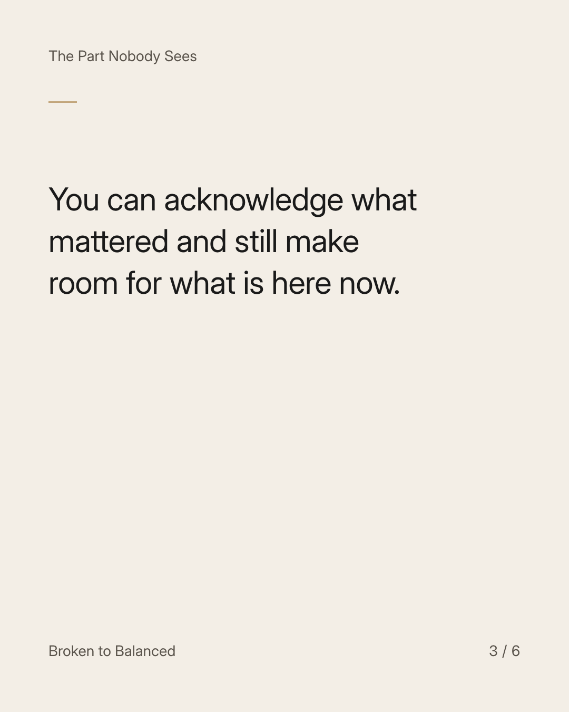
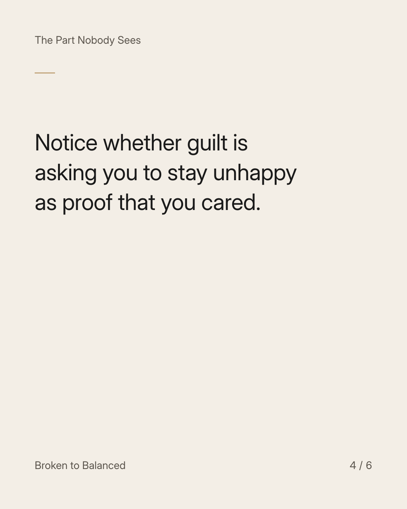

Exact text and accessibility text
Enjoying your life again does not mean the past meant nothing.
Slide 1 of 6. Enjoying your life again does not mean the past meant nothing.


Exact text and accessibility text
A new friendship, interest, or good day does not require you to rewrite an important relationship as meaningless.
Slide 2 of 6. A new friendship, interest, or good day does not require you to rewrite an important relationship as meaningless.


Exact text and accessibility text
You can acknowledge what mattered and still make room for what is here now.
Slide 3 of 6. You can acknowledge what mattered and still make room for what is here now.


Exact text and accessibility text
Notice whether guilt is asking you to stay unhappy as proof that you cared.
Slide 4 of 6. Notice whether guilt is asking you to stay unhappy as proof that you cared.

Exact text and accessibility text
Bring that question to someone trustworthy if it is difficult to untangle alone.
Slide 5 of 6. Bring that question to someone trustworthy if it is difficult to untangle alone.

Exact text and accessibility text
Share this with someone who feels they need permission to enjoy a life that changed.
Slide 6 of 6. Share this with someone who feels they need permission to enjoy a life that changed.
Exact caption
Plain-text fallback: select and copy the caption.